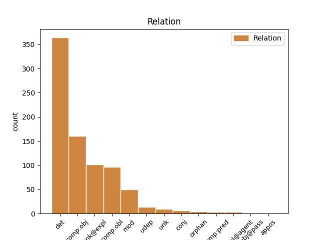
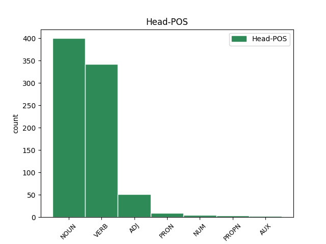
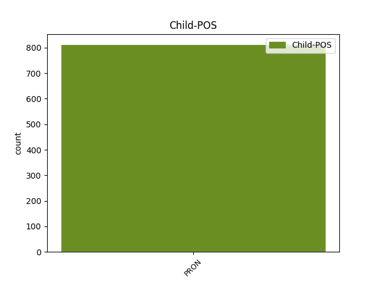

Distribution of features within this leaf



Agreement Rules sorted by frequency.
- When the dependent token is the determiner(det) of the head token, and the dependent token is PRON.
1 Рѣшѧ _ _ _ _ 0 _ _ _
2 же _ _ _ _ 0 _ _ _
3 отъ _ _ _ _ 0 _ _ _
4 оученикъ оученикъ NOUN Nb Case=Gen|Gender=Masc|Number=Plur 0 _ _ _
5 его и PRON Pp Case=Gen|Gender=Masc|Number=Sing|Person=3|PronType=Prs 4 det _ ref=JOHN_16.17
6 къ _ _ _ _ 0 _ _ _
7 себѣ _ _ _ _ 0 _ _ _
1 ꙇ _ _ _ _ 0 _ _ _
2 въставъша _ _ _ _ 0 _ _ _
3 во _ _ _ _ 0 _ _ _
4 тъ _ _ _ _ 0 _ _ _
5 часъ _ _ _ _ 0 _ _ _
6 вратисте _ _ _ _ 0 _ _ _
7 сѧ _ _ _ _ 0 _ _ _
8 въ _ _ _ _ 0 _ _ _
9 ꙇ҃҅мъ _ _ _ _ 0 _ _ _
10 ꙇ _ _ _ _ 0 _ _ _
11 обрѣтета _ _ _ _ 0 _ _ _
12 съвъкоуплъшѧ съвъкоупити VERB V- Case=Acc|Gender=Fem,Masc|Number=Plur|Strength=Strong|Tense=Past|VerbForm=Part|Voice=Act 0 _ _ _
13 сѧ себе PRON Pk Case=Acc|Number=Sing|Person=3|PronType=Prs|Reflex=Yes 12 unk@expl _ ref=LUKE_24.33
14 единого _ _ _ _ 0 _ _ _
15 на _ _ _ _ 0 _ _ _
16 десѧте _ _ _ _ 0 _ _ _
17 ꙇ _ _ _ _ 0 _ _ _
18 иже _ _ _ _ 0 _ _ _
19 бѣахѫ _ _ _ _ 0 _ _ _
20 съ _ _ _ _ 0 _ _ _
21 ними _ _ _ _ 0 _ _ _
22 г҃лѭштѧ _ _ _ _ 0 _ _ _
23 въ _ _ _ _ 0 _ _ _
24 істинѫ _ _ _ _ 0 _ _ _
25 ѣко _ _ _ _ 0 _ _ _
26 въста _ _ _ _ 0 _ _ _
27 х҃ъ _ _ _ _ 0 _ _ _
28 и _ _ _ _ 0 _ _ _
29 ѣви _ _ _ _ 0 _ _ _
30 сѧ _ _ _ _ 0 _ _ _
31 симоноу _ _ _ _ 0 _ _ _
1 Ꙇ _ _ _ _ 0 _ _ _
2 си _ _ _ _ 0 _ _ _
3 сътворѧтъ _ _ _ _ 0 _ _ _
4 вамъ _ _ _ _ 0 _ _ _
5 ѣко _ _ _ _ 0 _ _ _
6 не _ _ _ _ 0 _ _ _
7 познашѧ _ _ _ _ 0 _ _ _
8 о҃тца отьць NOUN Nb Case=Gen|Gender=Masc|Number=Sing 0 _ _ _
9 ни _ _ _ _ 0 _ _ _
10 мене азъ PRON Pp Case=Gen|Number=Sing|Person=1|PronType=Prs 8 conj _ ref=JOHN_16.3
1 во _ _ _ _ 0 _ _ _
2 въскрѣшение _ _ _ _ 0 _ _ _
3 оубо _ _ _ _ 0 _ _ _
4 которааго которꙑи PRON Pi Case=Gen|Gender=Masc|Number=Sing|PronType=Int 0 _ _ _
5 ихъ и PRON Pp Case=Gen|Gender=Masc|Number=Plur|Person=3|PronType=Prs 4 mod _ ref=LUKE_20.33
6 бѫдетъ _ _ _ _ 0 _ _ _
7 жена _ _ _ _ 0 _ _ _
1 како _ _ _ _ 0 _ _ _
2 вꙑ _ _ _ _ 0 _ _ _
3 можете _ _ _ _ 0 _ _ _
4 вѣровати _ _ _ _ 0 _ _ _
5 славѫ _ _ _ _ 0 _ _ _
6 дроугъ дроугъ PRON Pc Case=Nom|Number=Sing|PronType=Rcp 9 comp:pred _ ref=JOHN_5.44
7 отъ _ _ _ _ 0 _ _ _
8 дроуга _ _ _ _ 0 _ _ _
9 приемлѭште приимати VERB V- Case=Nom|Gender=Masc|Number=Plur|Strength=Strong|Tense=Pres|VerbForm=Part|Voice=Act 0 _ _ _
10 ꙇ҅ _ _ _ _ 0 _ _ _
11 славꙑ _ _ _ _ 0 _ _ _
12 ѣже _ _ _ _ 0 _ _ _
13 отъ _ _ _ _ 0 _ _ _
14 единааго _ _ _ _ 0 _ _ _
15 б҃а _ _ _ _ 0 _ _ _
16 не _ _ _ _ 0 _ _ _
17 ищете _ _ _ _ 0 _ _ _
1 биѭштюмоу _ _ _ _ 0 _ _ _
2 тѧ _ _ _ _ 0 _ _ _
3 въ _ _ _ _ 0 _ _ _
4 ланитѫ _ _ _ _ 0 _ _ _
5 подаи _ _ _ _ 0 _ _ _
6 дроугоуѭ _ _ _ _ 0 _ _ _
7 ꙇ _ _ _ _ 0 _ _ _
8 отемлѭштюмоу отьмати VERB V- Case=Dat|Gender=Masc|Number=Sing|Strength=Weak|Tense=Pres|VerbForm=Part|Voice=Act 0 _ _ _
9 тебѣ тꙑ PRON Pp Case=Dat|Number=Sing|Person=2|PronType=Prs 8 comp:obl _ ref=LUKE_6.29
10 ризѫ _ _ _ _ 0 _ _ _
11 ꙇ _ _ _ _ 0 _ _ _
12 срачицѧ _ _ _ _ 0 _ _ _
13 не _ _ _ _ 0 _ _ _
14 възбрани _ _ _ _ 0 _ _ _
1 ꙇ _ _ _ _ 0 _ _ _
2 ѣште _ _ _ _ 0 _ _ _
3 любите _ _ _ _ 0 _ _ _
4 любѧщѧѩ любити VERB V- Case=Acc|Gender=Masc|Number=Plur|Strength=Weak|Tense=Pres|VerbForm=Part|Voice=Act 0 _ _ _
5 вꙑ вꙑ PRON Pp Case=Acc|Number=Plur|Person=2|PronType=Prs 4 comp:obj _ ref=LUKE_6.32
6 каѣ _ _ _ _ 0 _ _ _
7 вамъ _ _ _ _ 0 _ _ _
8 хвала _ _ _ _ 0 _ _ _
9 естъ _ _ _ _ 0 _ _ _
1 ꙇли _ _ _ _ 0 _ _ _
2 нѣстъ _ _ _ _ 0 _ _ _
3 ми азъ PRON Pp Case=Dat|Number=Sing|Person=1|PronType=Prs 0 _ _ _
4 лѣть _ _ _ _ 0 _ _ _
5 сътворити _ _ _ _ 0 _ _ _
6 въ _ _ _ _ 0 _ _ _
7 своихъ _ _ _ _ 0 _ _ _
8 ми азъ PRON Pp Case=Dat|Number=Sing|Person=1|PronType=Prs 3 appos _ ref=MATT_20.15
9 еже _ _ _ _ 0 _ _ _
10 хоштѫ _ _ _ _ 0 _ _ _
1 ꙇ _ _ _ _ 0 _ _ _
2 си _ _ _ _ 0 _ _ _
3 такожде _ _ _ _ 0 _ _ _
4 сѫтъ _ _ _ _ 0 _ _ _
5 ꙇже иже PRON Pr Case=Nom|Gender=Masc|Number=Plur|PronType=Rel 8 subj@pass _ ref=MARK_4.16
6 на _ _ _ _ 0 _ _ _
7 каменънꙑхъ _ _ _ _ 0 _ _ _
8 сѣеми сѣти VERB V- Case=Nom|Gender=Masc|Number=Plur|Strength=Strong|Tense=Pres|VerbForm=Part|Voice=Pass 0 _ _ _
9 ꙇже _ _ _ _ 0 _ _ _
10 егда _ _ _ _ 0 _ _ _
11 слꙑшѧтъ _ _ _ _ 0 _ _ _
12 слово _ _ _ _ 0 _ _ _
13 абие _ _ _ _ 0 _ _ _
14 съ _ _ _ _ 0 _ _ _
15 радостиѭ _ _ _ _ 0 _ _ _
16 приемлѭтъ _ _ _ _ 0 _ _ _
17 е҅ _ _ _ _ 0 _ _ _
18 ꙇ _ _ _ _ 0 _ _ _
19 не _ _ _ _ 0 _ _ _
20 имѫтъ _ _ _ _ 0 _ _ _
21 корене _ _ _ _ 0 _ _ _
22 вь _ _ _ _ 0 _ _ _
23 себѣ _ _ _ _ 0 _ _ _
24 нъ _ _ _ _ 0 _ _ _
25 врѣменьни _ _ _ _ 0 _ _ _
26 сѫтъ _ _ _ _ 0 _ _ _
1 Б҃лгнъ _ _ _ _ 0 _ _ _
2 г҃ъ _ _ _ _ 0 _ _ _
3 б҃ъ _ _ _ _ 0 _ _ _
4 и҃злвъ _ _ _ _ 0 _ _ _
5 ѣко _ _ _ _ 0 _ _ _
6 посѣти _ _ _ _ 0 _ _ _
7 и _ _ _ _ 0 _ _ _
8 сътвори _ _ _ _ 0 _ _ _
9 избавление _ _ _ _ 0 _ _ _
10 людемъ _ _ _ _ 0 _ _ _
11 своимъ _ _ _ _ 0 _ _ _
12 ꙇ _ _ _ _ 0 _ _ _
13 вьздвиже _ _ _ _ 0 _ _ _
14 рогъ _ _ _ _ 0 _ _ _
15 с҃псниѣ _ _ _ _ 0 _ _ _
16 нашего _ _ _ _ 0 _ _ _
17 въ _ _ _ _ 0 _ _ _
18 домоу _ _ _ _ 0 _ _ _
19 д҃авда _ _ _ _ 0 _ _ _
20 отрока _ _ _ _ 0 _ _ _
21 своего _ _ _ _ 0 _ _ _
22 ѣкоже _ _ _ _ 0 _ _ _
23 г҃ла _ _ _ _ 0 _ _ _
24 оустꙑ _ _ _ _ 0 _ _ _
25 с҃тꙑхъ _ _ _ _ 0 _ _ _
26 сѫштиихъ _ _ _ _ 0 _ _ _
27 отъ _ _ _ _ 0 _ _ _
28 вѣка _ _ _ _ 0 _ _ _
29 п҃ркъ _ _ _ _ 0 _ _ _
30 с҃псние _ _ _ _ 0 _ _ _
31 отъ _ _ _ _ 0 _ _ _
32 врагъ _ _ _ _ 0 _ _ _
33 нашихъ _ _ _ _ 0 _ _ _
34 ꙇ _ _ _ _ 0 _ _ _
35 из-д- _ _ _ _ 0 _ _ _
36 рѫкъ _ _ _ _ 0 _ _ _
37 въсѣхъ _ _ _ _ 0 _ _ _
38 ненавидѧштиихъ ненавидѣти VERB V- Case=Gen|Gender=Masc|Number=Plur|Strength=Weak|Tense=Pres|VerbForm=Part|Voice=Act 0 _ _ _
39 насъ мꙑ PRON Pp Case=Gen|Number=Plur|Person=1|PronType=Prs 38 unk _ ref=LUKE_1.71
40 сътворити _ _ _ _ 0 _ _ _
41 милость _ _ _ _ 0 _ _ _
42 съ _ _ _ _ 0 _ _ _
43 о҃ци _ _ _ _ 0 _ _ _
44 нашими _ _ _ _ 0 _ _ _
45 ꙇ _ _ _ _ 0 _ _ _
46 помѧнѫти _ _ _ _ 0 _ _ _
47 завѣтъ _ _ _ _ 0 _ _ _
48 с҃тои _ _ _ _ 0 _ _ _
49 свои _ _ _ _ 0 _ _ _
50 клѧтвоѭ _ _ _ _ 0 _ _ _
51 еѭже _ _ _ _ 0 _ _ _
52 клѧтъ _ _ _ _ 0 _ _ _
53 сѧ _ _ _ _ 0 _ _ _
54 къ _ _ _ _ 0 _ _ _
55 авраамоу _ _ _ _ 0 _ _ _
56 о҃тцю _ _ _ _ 0 _ _ _
57 нашемоу _ _ _ _ 0 _ _ _
58 дати _ _ _ _ 0 _ _ _
59 намъ _ _ _ _ 0 _ _ _
60 бе- _ _ _ _ 0 _ _ _
61 страха _ _ _ _ 0 _ _ _
62 ꙇз-д- _ _ _ _ 0 _ _ _
63 рѫкꙑ _ _ _ _ 0 _ _ _
64 врагъ _ _ _ _ 0 _ _ _
65 нашихъ _ _ _ _ 0 _ _ _
66 избавльшемь _ _ _ _ 0 _ _ _
67 сѧ _ _ _ _ 0 _ _ _
68 слоужити _ _ _ _ 0 _ _ _
69 емоу _ _ _ _ 0 _ _ _
70 прѣподобиемь _ _ _ _ 0 _ _ _
71 ꙇ _ _ _ _ 0 _ _ _
72 правъдоѭ _ _ _ _ 0 _ _ _
73 прѣдъ _ _ _ _ 0 _ _ _
74 нимь _ _ _ _ 0 _ _ _
75 вьсѧ _ _ _ _ 0 _ _ _
76 дьни _ _ _ _ 0 _ _ _
77 живота _ _ _ _ 0 _ _ _
78 нашего _ _ _ _ 0 _ _ _
Disagree Examples:
1 ꙇ _ _ _ _ 0 _ _ _
2 видѣвъ _ _ _ _ 0 _ _ _
3 и҃съ _ _ _ _ 0 _ _ _
4 вѣрѫ вѣра NOUN Nb Case=Acc|Gender=Fem|Number=Sing 0 _ _ _
5 ихъ и PRON Pp Case=Gen|Gender=Masc|Number=Plur|Person=3|PronType=Prs 4 det _ ref=MATT_9.2
6 рече _ _ _ _ 0 _ _ _
7 ослабленоуемоу _ _ _ _ 0 _ _ _
1 ꙇ _ _ _ _ 0 _ _ _
2 видѣвъ _ _ _ _ 0 _ _ _
3 и҃съ _ _ _ _ 0 _ _ _
4 помꙑшлениѣ помꙑшлѥниѥ NOUN Nb Case=Acc|Gender=Neut|Number=Plur 0 _ _ _
5 ихъ и PRON Pp Case=Gen|Gender=Masc|Number=Plur|Person=3|PronType=Prs 4 det _ ref=MATT_9.4
6 рече _ _ _ _ 0 _ _ _
1 ꙇ _ _ _ _ 0 _ _ _
2 бꙑⷭ҇ _ _ _ _ 0 _ _ _
3 емоу _ _ _ _ 0 _ _ _
4 вьзлежѧщю _ _ _ _ 0 _ _ _
5 въ _ _ _ _ 0 _ _ _
6 домоу _ _ _ _ 0 _ _ _
7 ꙇ _ _ _ _ 0 _ _ _
8 се _ _ _ _ 0 _ _ _
9 мъноѕи _ _ _ _ 0 _ _ _
10 грѣшъници _ _ _ _ 0 _ _ _
11 и _ _ _ _ 0 _ _ _
12 мꙑтаре _ _ _ _ 0 _ _ _
13 пришедъше _ _ _ _ 0 _ _ _
14 възлежаахѫ _ _ _ _ 0 _ _ _
15 съ _ _ _ _ 0 _ _ _
16 и҃смъ _ _ _ _ 0 _ _ _
17 ꙇ _ _ _ _ 0 _ _ _
18 съ _ _ _ _ 0 _ _ _
19 оученикꙑ оученикъ NOUN Nb Case=Ins|Gender=Masc|Number=Plur 0 _ _ _
20 его и PRON Pp Case=Gen|Gender=Masc|Number=Sing|Person=3|PronType=Prs 19 det _ ref=MATT_9.10
1 ꙇ _ _ _ _ 0 _ _ _
2 видѣвъше _ _ _ _ 0 _ _ _
3 фарисеи _ _ _ _ 0 _ _ _
4 г҃лхѫ _ _ _ _ 0 _ _ _
5 оученикомъ оученикъ NOUN Nb Case=Dat|Gender=Masc|Number=Plur 0 _ _ _
6 его и PRON Pp Case=Gen|Gender=Masc|Number=Sing|Person=3|PronType=Prs 5 det _ ref=MATT_9.11
1 и _ _ _ _ 0 _ _ _
2 въставъ _ _ _ _ 0 _ _ _
3 и҃съ _ _ _ _ 0 _ _ _
4 по _ _ _ _ 0 _ _ _
5 немь _ _ _ _ 0 _ _ _
6 идѣаше _ _ _ _ 0 _ _ _
7 и _ _ _ _ 0 _ _ _
8 оученици оученикъ NOUN Nb Case=Nom|Gender=Masc|Number=Plur 0 _ _ _
9 его и PRON Pp Case=Gen|Gender=Masc|Number=Sing|Person=3|PronType=Prs 8 det _ ref=MATT_9.19